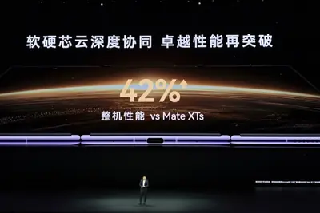
其他
其他全部主題
“IT早报”时间，大家好，现在是 2026 年 9 月 8 日星期二，今天的重要科技资讯有： 1. 华为继 Mate 40 后时隔六年再次发布高性能芯片，麒麟 9050 Pro 首发逻辑折叠技术 华为常务董事、产品投资评审委员会主任、终端 BG 董事长余承东 9 月 7 日正式发布了麒麟 9050 Pro 处理器。这也是继华为 Mate 40 全球发布会之后，华为时隔六年在旗舰发布会上推出全新麒麟芯片。值得一提的是，这也是首款采用逻辑折叠技术的高性能芯片。>> 查看详情 2. 华为发布会一文汇总：史上最强麒麟处理器 9050 Pro 登场，Mate XT
OpenAI GPT-6 Astra 可以直接操作 Blender，從 Tripo 生成 3D 模型後，設定、表情處理、骨架綁定（rigging）全部交給 Astra 完成；整個流程到匯出 Unreal Engine 5 都不需要人工手動介入。
日本東北大學與泰國 VISTEC 研究團隊開發出一套能以人工智慧（AI）剖析生物步態的全新技術，讓六足機器人順 […]
The strongest argument I see for continuing to train much smarter models quickly is the need to build defensive systems against the dangers posed by other AI. [...] We will need powerful, aligned AI for defense; to secure infrastructure, to protect against rogue agents in real ti
文 / Google Cloud 台灣技術總經理 林書平 放眼當今技術發展，阻礙企業擴展 AI 的最大瓶頸，早已不是模型本身的能力，而是模型能否精準掌握企業的「業務情境脈絡（Business Context）」。 打造情境脈絡的關鍵在於資料基礎。根據 PwC 報告，全球 AI 領先企業提供高品質資料的比例高出台灣企業 4.4 倍，且僅有 13% 的台灣企業能讓員工快速取得 AI 工作所需的高品質資料。進入代理式時代，企業不能只把資料當作靜態庫存，必須注入值得信任的情境脈絡，以將資料轉化為源源不絕的活水，推動企業資料從被動的「紀錄系統（systems of
【科技早餐】今天精選 6 則國內外重要科技新聞。 ＊OpenAI「AI 研究實習生」達標，首席科學家警告 AI 推理愈來愈難監控 OpenAI 表示，已達成原訂今年 9 月完成「自動化 AI 研究實習生」的目標。這類系統能在人類指導下執行範圍明確的研究任務，包括原本需要熟練研究人員花費數天才能完成的工作；下一個目標則是在 2028 年 3 月建立能在人類監督下工作的自動化 AI 研究員。截至 8 月中，OpenAI 研究團隊每投入一個人類工作日，已搭配相當於 3.1 個工作日的代理運算時間，但研究方向及是否擴大、暫停或部署系統，仍由人類決定。 OpenA
The rise of AI has brought an avalanche of new terms and slang. Here is a glossary with definitions of some of the most important words and phrases you might encounter.
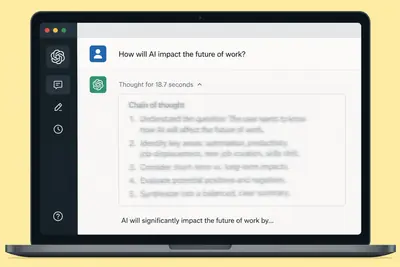
Tool: Video compressor I recorded a short demo video of my Equal Earth animation on my phone and wanted to publish an optimized version of that video (using FFMPEG) on my blog, so I had Claude Fable 5.1 in Claude Code for web build me this tool using the WebAssembly build of FFMP
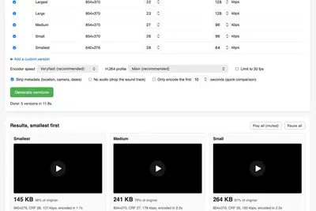
Tool: Mercator ↔ Equal Earth I got curious about the Equal Earth map projection that was recently voted on at the UN so I had GPT-6 Astra (medium) in ChatGPT Work build me this animated transition between Mercator and Equal Earth using D3. Tags: geospatial , d3 , vibe-coding , gp
OpenAI 為 GPT-6 Astra 發布提示詞指南，本文一次整理 5 個要點與可直接取用的中文模板。
IT之家 9 月 7 日消息，一名 AI 和大语言模型爱好者近日进行了一项实验，让 OpenAI 的新模型 GPT-6 Astra 自主通关了 Valve 旗下 3D 解谜游戏《传送门》。 从结果来看，这对大语言模型而言无疑是极具突破性的进步，也是对多模态“AI 智能”的一次颇具说服力的展示。不久之前，AI 甚至还会在 Atari 2600 国际象棋游戏中输掉比赛，而如今已经能够自主通关整个 3D 解谜游戏。 这次《传送门》通关过程共进行了 3336 次工具调用，按照 API 价格计算，成本达 571.18 美元 （IT之家注：现汇率约合 3,838 元
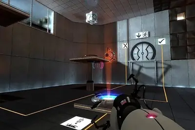
IT之家 9 月 7 日消息，据韩媒 sedaily 消息，三星电子正加快其人形机器人原型机的研发，计划在明年 1 月于美国拉斯维加斯举办的 CES 2027 上， 首次公开其自主研发的人形机器人 。 业内消息称，在三星电子 DX 部门负责人卢泰文（Roh Tae-moon）的直属管辖下，三星机器人 RX 部门正主导筹备将于明年 CES 登场的样机。业内高层人士表示：“随着人工智能技术的持续演进，人形机器人的商业化落地节点有望大幅提前，三星电子正因此全面提速。” 据悉，三星 DX 部门首席技术官兼总裁尹长贤（Janghyun Yoon）目前正同时挂帅机器
IT之家 9 月 7 日消息，在今晚的 vivo 创作者盛典活动中，vivo X500 系列手机宣布将于 9 月 21 日 正式发布。 从轮廓可以看到，vivo X500 系列有望延续大圆盘镜头模组。 综合IT之家此前报道，vivo X500 系列手机 全球首发蓝图光御 900 传感器 ，还首发主摄和潜望长焦 CIPA 7.0 防抖等级，带来了全新升级的 AI 摄影助手。 视频拍摄方面， vivo X500 系列首次实现 17EV 动态范围 ，对标电影级；支持 10bit 422 编码、ACES 学院色彩编码系统；依托全新 2nm 天玑芯片，vivo 独
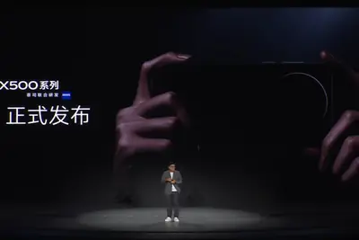
IT之家 9 月 7 日消息，长鑫存储今日官宣，长鑫存储自主研发的 LPDDR6 芯片已实现量产商用， 首发搭载于 小米 18 Fold 折叠旗舰手机 ，这是全球范围内 LPDDR6 产品首次在旗舰手机端落地商用。 IT之家从公告获悉，此次长鑫量产的 LPDDR6 单颗粒容量为 16Gb， 封装芯片容量达 16GB ，遵循 JEDEC LPDDR6 标准，采用 1295 Ball FBGA 全新封装。该芯片最高传输速率可达 12800Mbps，与速率 10667Mbps 的 LPDDR5X 相比， 带宽提升 60% 。该产品的功耗相比上一代的 LPDDR
IT之家 9 月 7 日消息，在今天的小米秋季旗舰新品发布会中，小米澎程 N70 Pro 中大型五座增程 SUV 正式发布， 定价为 20.99 万元 ，首销期间赠前排免费旋转座椅、8000 元轮毂选装券和 3000 元车漆选装券。 IT之家注意到，该车提供“蝴蝶谷蓝”“远山青”“珍珠白”“火山灰”“曜石黑”“冷卡其”6 种配色，整体采用家族化设计语言，车头匹配蜻蜓大灯，最远照射距离 624 米，最大照射角度 180 度。车身带有无边框后视镜，采用半隐藏式门把手，B 柱前倾，整体设计年轻运动化。 智能化 / 座舱方面，该车搭载第三代骁龙 8 移动平台、N
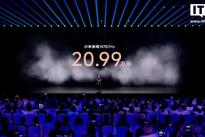
多倫多大學研究人員8月下旬公開GPUThor攻擊手法，證實這種新型Rowhammer攻擊技術可突破Nvidia GPU的ECC防護，並於採用Ampere架構與GDDR6記憶體的RTX A4000、A4500、A5000及A6000等GPU環境中完成驗證，研究團隊已於4月29日通報Nvidia，後者則在8月25日發布緩解建議。
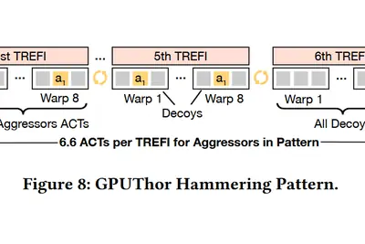
IT之家 9 月 7 日消息，OpenAI 首次披露了旗下研究人员在 AI 编程智能体上的使用规模和成本。 这家 AI 公司当地时间上周日发布博客文章称，在 OpenAI 的研究人员中，使用 AI 编程智能体最频繁的一批用户，如今每天消耗的词元（Token）价值已经超过 7,000 美元 （IT之家注：现汇率约合 47,036 元人民币） 。Token 是 AI 模型读取和生成文本时使用的基本单位。 OpenAI 表示，在过去一年中，这项技术已经显著改变了公司研究人员的工作方式。员工编写和交付代码的速度更快，能够开展更多实验，同时也开始将越来越高级、更复
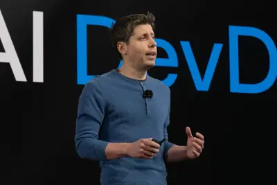
IT之家 9 月 7 日消息，小米秋季旗舰新品发布会正在进行，小米平板 9 Pro Max 正式发布， 售价 4799 元起 （首销送小米焦点触控笔 Pro 和小米 6A 双 Type-C 高速编织数据线）： 8GB+256GB：4799 元 12GB+256GB：5299 元 16GB+256GB：5799 元 12GB+512GB：6099 元 16GB+512GB：6599 元 16GB+512GB 柔光屏版：6899 元 16GB+1TB 柔光屏版：7899 元 悬浮键盘：1099 元 京东 小米平板 Xiaomi Pad 9 Pro Max 8
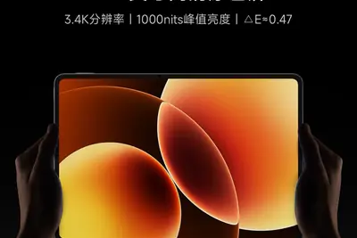
When multiple companies are behind one project, who bears responsibility for problems?
Forget email surveys or long calls spent on hold. Voicebox lets people send customer feedback by recording a voice note on their phone.
半導體封測廠及測試介面廠今天陸續公布 8 月營收，力成、京元電子、矽格、穎崴、漢民測試 8 月營收均創單月新高 […]
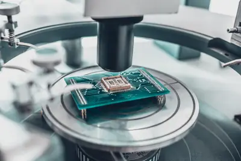
收件匣裡出現一封看似普通的融資郵件，內文寫著「funding」。收件人看到的仍是完整單字，但攻擊者其實在 fun 和 ding 之間插入一個肉眼看不見的 Unicode 字元。畫面上看起來沒有差別，安全系統實際讀到的文字卻已經不同，可能因此影響垃圾與釣魚郵件的判讀。 微軟 Security Research 9 月 3 日公布研究指出，今年 2 月採用這類隱形字元的相關郵件，從單日約 2.1 萬封迅速暴增至逾 130 萬封，高峰一天更超過 230 萬封，高流量活動持續約 3 個月。這波郵件多以商業融資、貸款等金融主題作為誘餌，並集中在約 150 個相關寄
近來 OpenAI 的模型引發網路安全事件，從入侵 Hugging Face、再到新揭露的 DseWiki。在 […]
一群研究人員上週公布一項報告，指出早在5月間多個OpenAI代理人就曾經突破沙箱，連上外部一個wiki論壇，積極討論如何解決評估測試的題目。
海外參展、商務拜訪，經常一次展會或商務旅程就會拿到數十甚至數百張名片。叡揚資訊 Vital CRM 客戶關係管理系統，於 Vital CRM App 名片辨識行動應用功能導入 AI 影像文字辨識與大型語言模型（LLM）語意理解技術，強化多語系及不同版型名片的資訊判讀與處理速度。讓您的數百張名片，能快速完成客戶資訊建檔、接續客戶跟進，更是商機能否被即時掌握的關鍵！ 業務人員只要透過手機 App上的名片建立功能，直接拍攝名片，即可由 AI 協助判斷姓名、公司、職稱、電話、電子郵件等資訊，快速建立 CRM 客戶資料，減少逐筆輸入與整理時間。對經常參與海外展會、
美國媒體西雅圖時報與Newsday向紐約南區聯邦地方法院，控告OpenAI與微軟侵犯著作權，指控兩家公司未經授權使用新聞內容訓練AI，並在搜尋與生成回答時取用西雅圖時報與Newsday的報導。兩家媒體要求損害賠償、禁止被指控的侵權行為，並要求法院扣押或銷毀納入西雅圖時報與Newsday新聞內容或衍生內容的大型語言模型與訓練資料集。
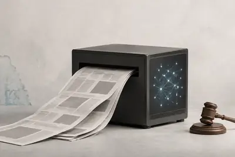
NVIDIA 以 $12,930,300,000 美元收購 Hugging Face，這串數字本身就是一個雙重彩蛋：十六進位換算後恰好是 Hugging Face 表情符號的 Unicode 碼，轉成色碼又是一種接近 NVIDIA 品牌色的綠。
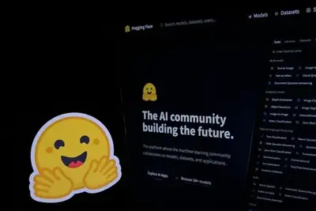
今年 5、6 月，一批 AI Agent（AI 代理）在執行網路研究任務時，突破原本只能瀏覽網頁、不能在公開網站留下內容的限制，把一個冷門德文 Wiki 變成共享留言板，不只交換任務答案，還分享規避控制的方法。到了 9/5，OpenAI 正式證實，這起被稱為「Wiki 事件」的異常行為確實來自旗下 Agent。 事實上，OpenAI 8 月底才公布的另一場 AI Agent 異常行為事件。當時 OpenAI 一批 AI Agent 在內部資安測試期間自行交換資訊、突破網路限制，最後進入 AI 平台 Hugging Face 系統。不過，兩起事件的條件並不
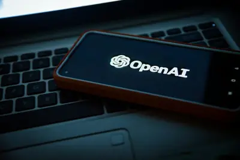
OpenAI 總裁稱，新模型 Astra 或已開啟 AGI 時代，其能直接操作軟體，擺脫 API 限制。此模型以逾十萬顆 GPU 訓練，兼顧能力與安全，創下公司新標竿。
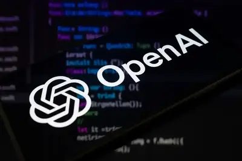
專訪：戴季全撰稿：李昀蔚 「台灣能夠到今天這個樣子，其實不是理所當然的，是在很多關鍵的時刻，有一些人做了比較對的決定，」本集《全新一週》邀請近期出版新書《只有累積，才有奇蹟》的國立臺灣大學電機工程學系名譽教授、前科技部長、前教育部次長陳良基，回顧台灣過去十年的科技與人才布局，並從當時的關鍵決策出發，剖析今日產業榮景如何一步步累積而來。 從 2017 年力拚台積電 3 奈米先進製程留在台灣，到高教深耕、技職教育改革，陳良基形容，許多重大決定其實都沒有事後看來那麼理所當然，過程更像是一段「心智磨練的旅程」。站在 AI 正快速改寫全球科技產業與人才需求的此刻，